BOARD -
CLASS -
SUBJECT -
CBSE
10th
MATHS
Paper Pattern for MCQ Term-I
TIME -
MARKS -
1 Hour 30 Minutes
40
Visit CBSE OFFICIAL PAGE for Regulations and Syllabus of Class 10th cbse
Solved Specimen CBSE MATHS Paper Semester-I 2022
SECTION- A
Q.1 The ratio of LCM and HCF of the least composite and the least prime numbers is
- 1:2
- 2:1
- 1:1
- 1:3
Solution
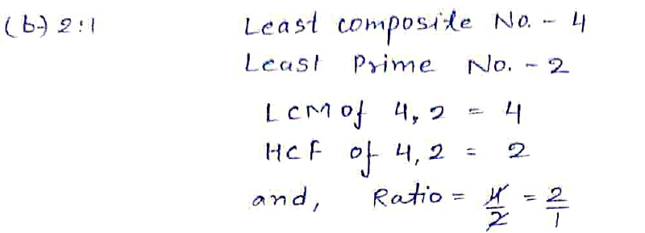Q.2 The value of k for which the lines 5x+733 and 15x + 21y = k coincide is
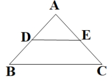- 9
- 5
- 7
- 18
Solution
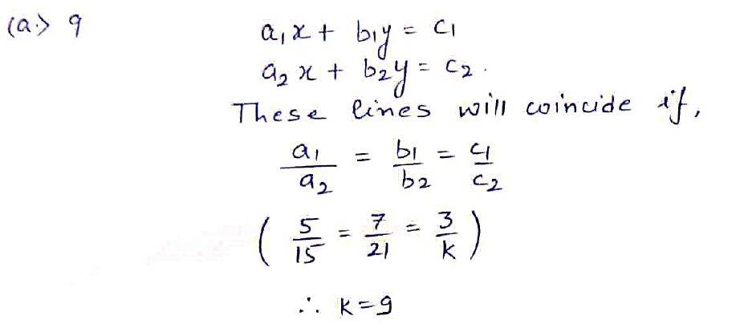Q.3 A girl walks 200m towards East and then 150m towards North. The distance of the girl from the starting point is
- 350m
- 250m
- 300m
- 225
Solution
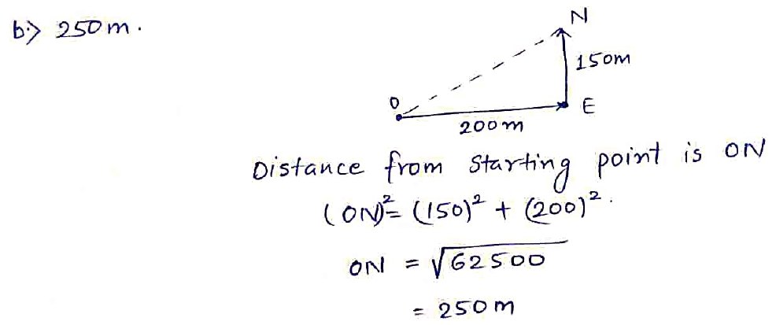Q.4 The lengths of the diagonals of a rhombus are 24cm and 32cm, then the length of the altitude of the rhombus is
- 12cm
- 12.8cm
- 19 cm
- 19.2cm
Solution
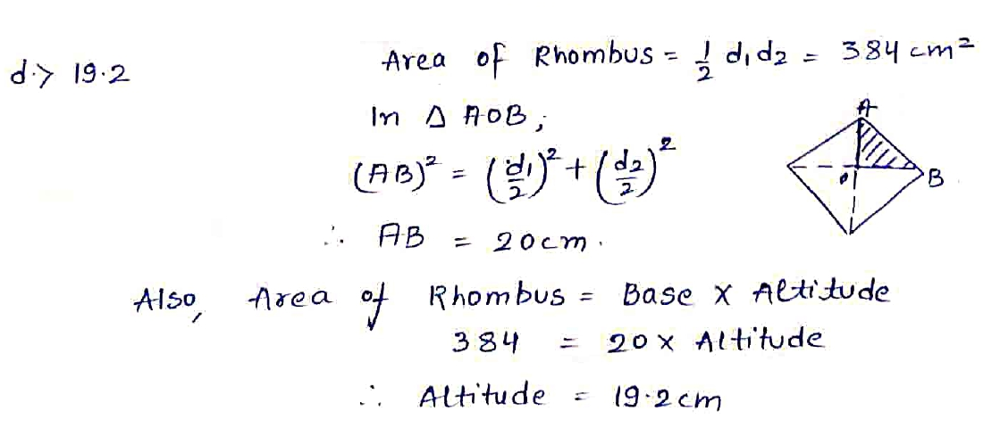Q.5 Two fair coins are tossed. What is the probability of getting at the most one head?
- 3/4
- 1/4
- 12
- 3/8
Solution
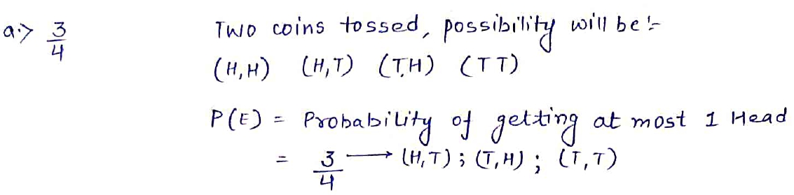Q.6 ∆ABC ∼ ∆PQR If AM and PN are altitudes of ∆ABC and ∆PQR respectively and AB2: PQ2 = 4 : 9, then AM:PN =
- 16:81
- 4:9
- 3:2
- 2:3
Solution
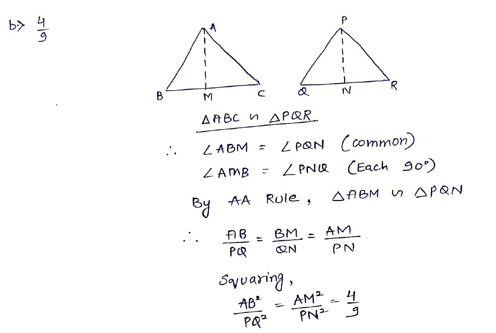Q.7 If 2sin2β— cos2β= 2, then β is
- 0°
- 90°
- 45°
- 30°
Solution
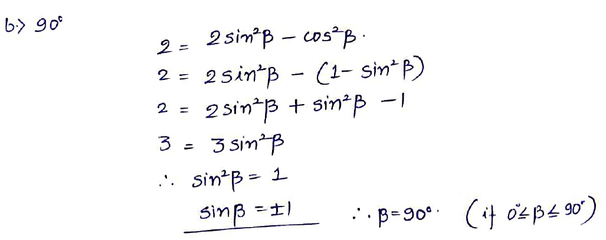Q.8 Prime factors of the denominator of a rational number with the decimal expansion 44.123 are
- 2,3
- 2,3,5
- 2,5
- 3,5
Solution
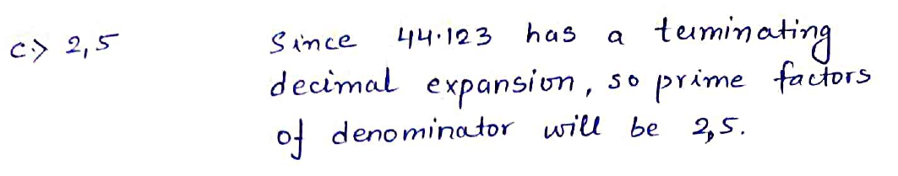Q.9 The lines x = a and y = b, are
- intersecting
- parallel
- overlapping
- (None of these)
Solution
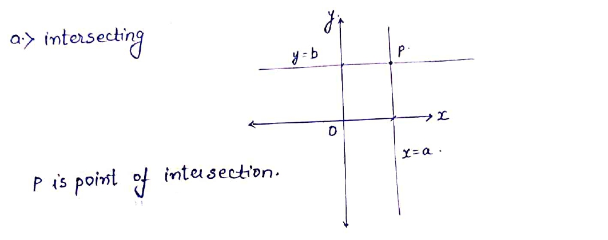Q.10 The distance of point A(-5, 6) from the origin is
- 11 units
- 61 units
- √11 units
- √61 units
Solution
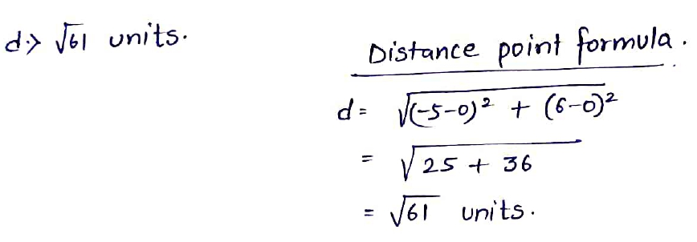Q.11 If a2 = 23/25, then a is
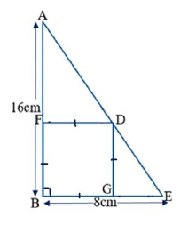- rational
- irrational
- whole number
- integer
Solution
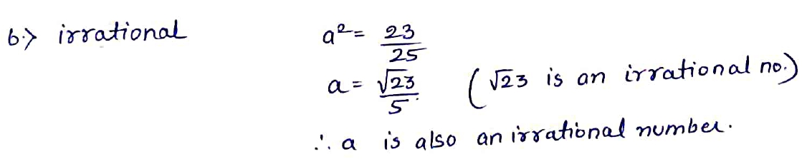Q.12 If LCM(x, 18) =36 and HCF(x, 18) =2, then x is
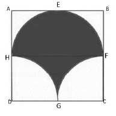- 2
- 3
- 4
- 5
Solution
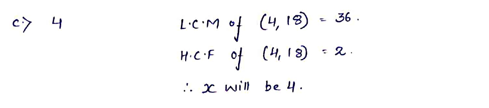Q.13 In ∆ABC right angled at B, if tan A= √3, then cos A cos C- sin A sin C =
- -1
- 0
- 1
- √3 / 2
Solution
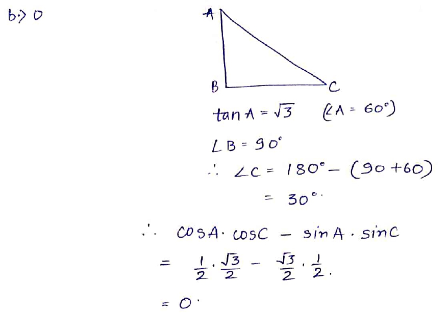Q.14 If the angles of ∆ABC are in ratio 1:1:2, respectively (the largest angle being angle C), then the value of is sec A / cosec B - tan A / cot B is
- 0
- 1/2
- 1
- √3 / 2
Solution
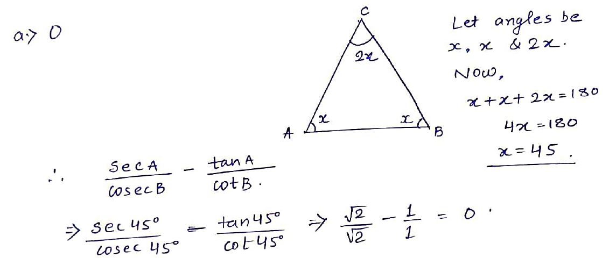Q.15 The number of revolutions made by a circular wheel of radius 0.7m in rolling a distance of 176m is
- 22
- 24
- 75
- 40
Solution
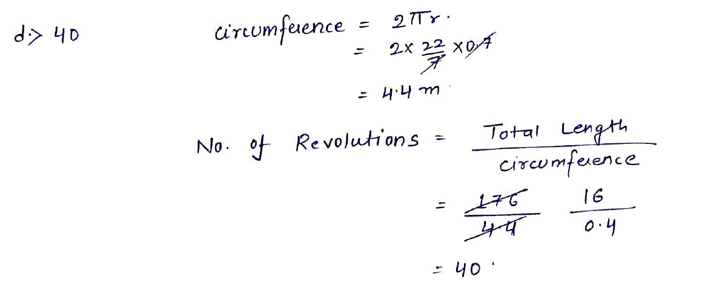Q.16 ∆ABC is such that AB=3 cm, BC= 2cm, CA= 2.5 cm. If ∆ABC ∽ ∆DEF and EF = 4cm, then perimeter of ∆DEF is
- 7.5 cm
- 15 cm
- 22.5 cm
- 30 cm
Solution
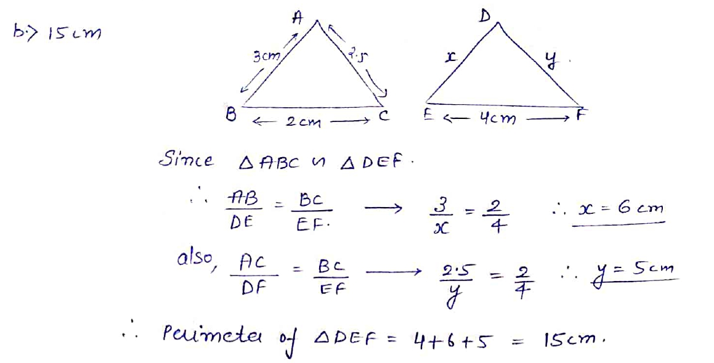Q.17 In the figure, if DE || BC, AD = 3cm, BD = 4cm and BC= 14 cm, then DE equals
- 7cm
- 6cm
- 4cm
- 3cm
Solution
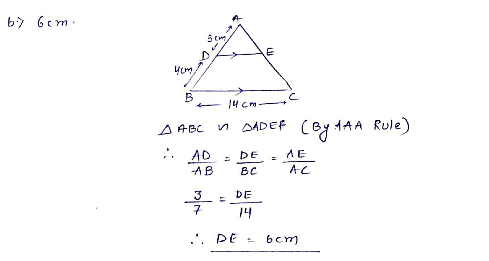Q.18 4 tanβ = 3, then (4 sin β - 3cos β) / (4 sin β + 3cos β)
- 0
- 1/3
- 2/3
- 3/4
Solution
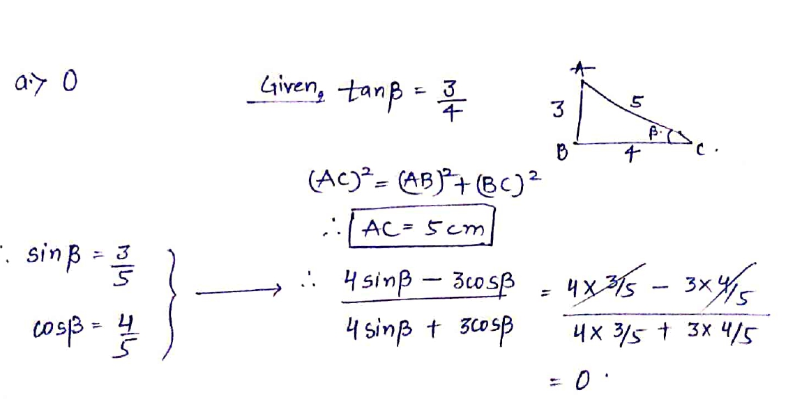Q.19 One equation of a pair of dependent linear equations is —5x + 7y = 2. The second equation can be
- 10x+14y +4 = 0
- —10x —14y+ 4 = 0
- —10x+14y + 4 = 0
- 10x — 14y = —4
Solution
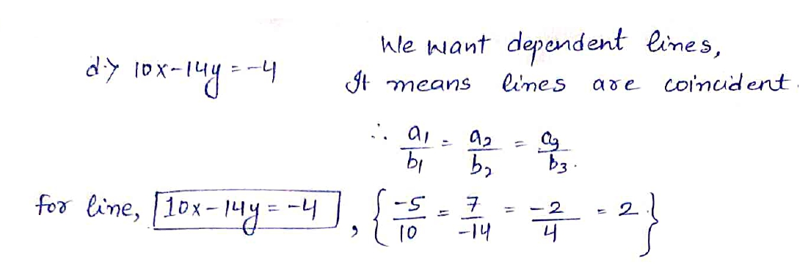Q.20 A letter of English alphabets is chosen at random. What is the probability that it is a letter of the word 'MATHEMATICS'?
- 4/13
- 9/26
- 5/13
- 11/26
Solution
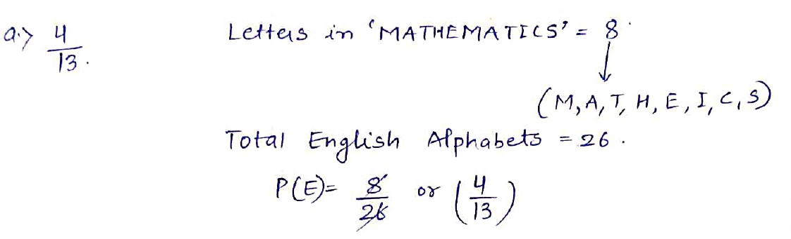SECTION- B
Q.21 If sum of two numbers is 1215 and their HCF is 81, then the possible number of pairs of such numbers are
- 2
- 3
- 4
- 5
Solution
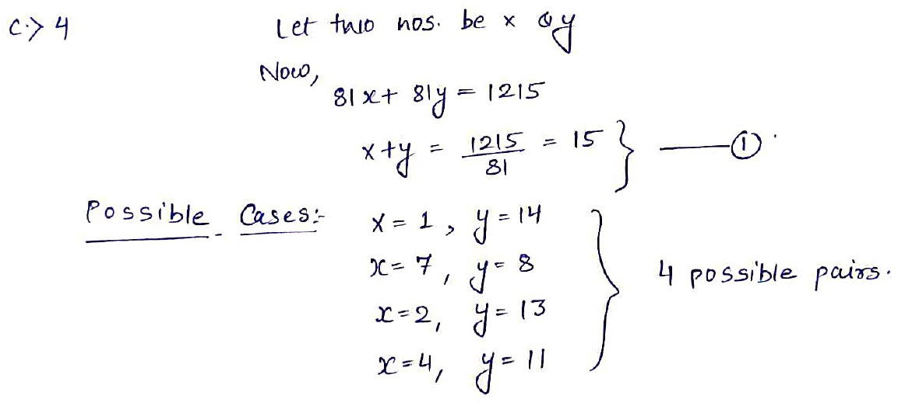Q.22 Given below is the graph representing two linear equations by lines AB and CD respectively. What is the area of the triangle formed by these two lines and the line x=0?
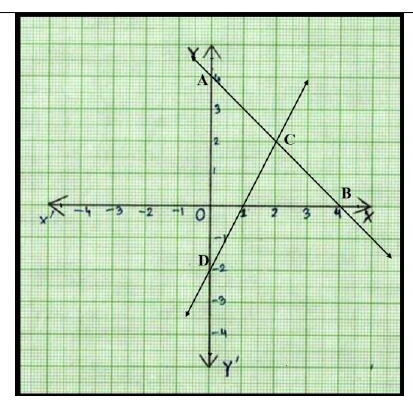- 3sq. units
- 4sq. units
- 6sq. units
- 8sq. units
Solution
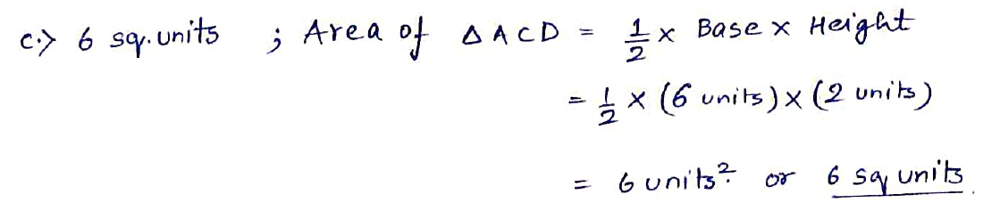Q.23 If tanα + cotα = 2, then tan20α + cot20α =
- 0
- 2
- 20
- 220
Solution
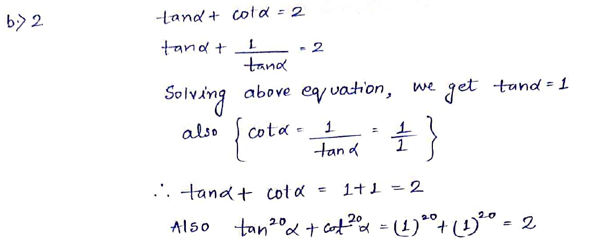Q.24 If 217x + 131y = 913, 131x + 217y = 827, then x +y is
- 5
- 6
- 7
- 8
Solution
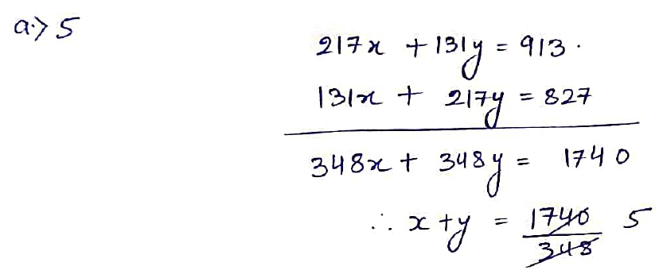Q.25 The LCM of two prime numbers p and q (p > q) is 221. Find the value of 3p — q
- 4
- 28
- 38
- 48
Solution
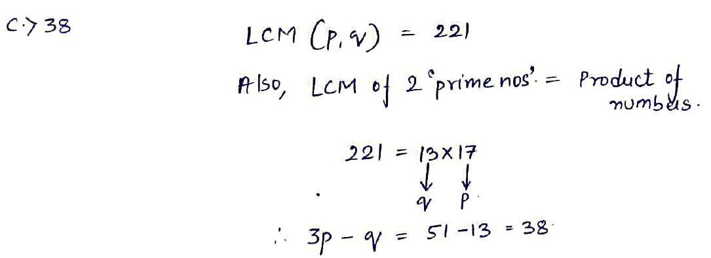Q.26 A card is drawn from a well shuffled deck of cards. What is the probability that the card drawn is neither a king nor a queen?
- 11/13
- 12/13
- 11/26
- 11/52
Solution
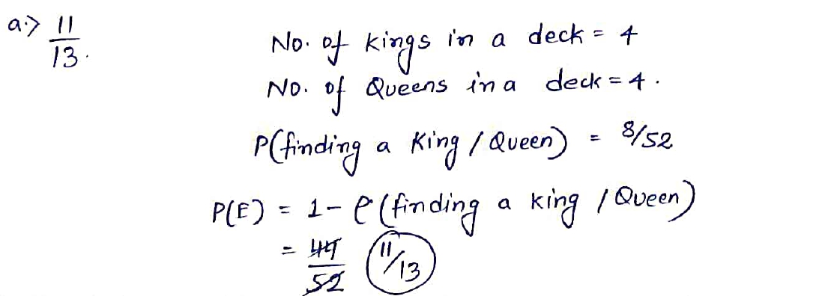Q.27 Two fair dice are rolled simultaneously. The probability that 5 will come up at least once is
- 5/36
- 11/36
- 12/36
- 23/36
Solution
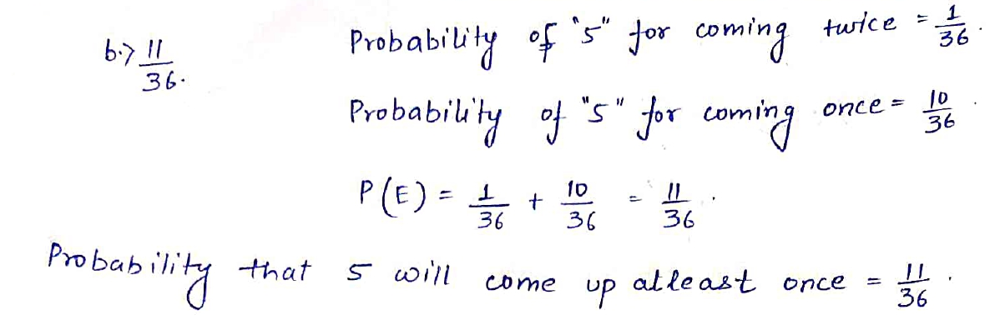Q.28 If 1+ sin2α = 3 sinα cosα, then values of cotα are
- -1,1
- 0,1
- 1,2
- -1,-1
Solution
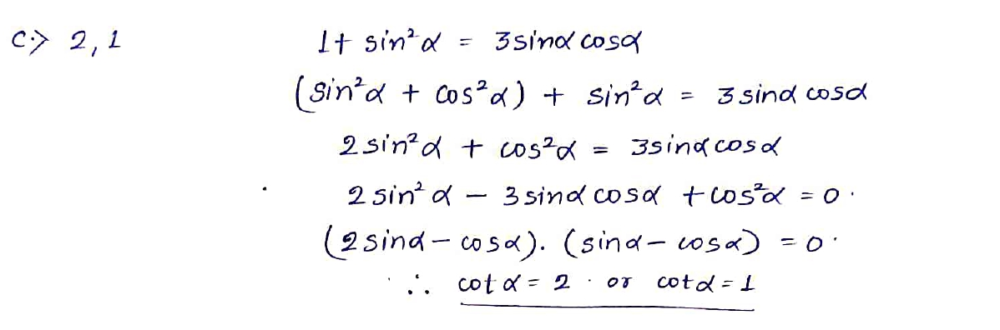Q.29 The vertices of a parallelogram in order are A(1,2), B(4, y), C(x, 6) and D(3,5). Then (x, y) is
- (6, 3)
- (3, 6)
- (5, 6)
- (1, 4)
Solution
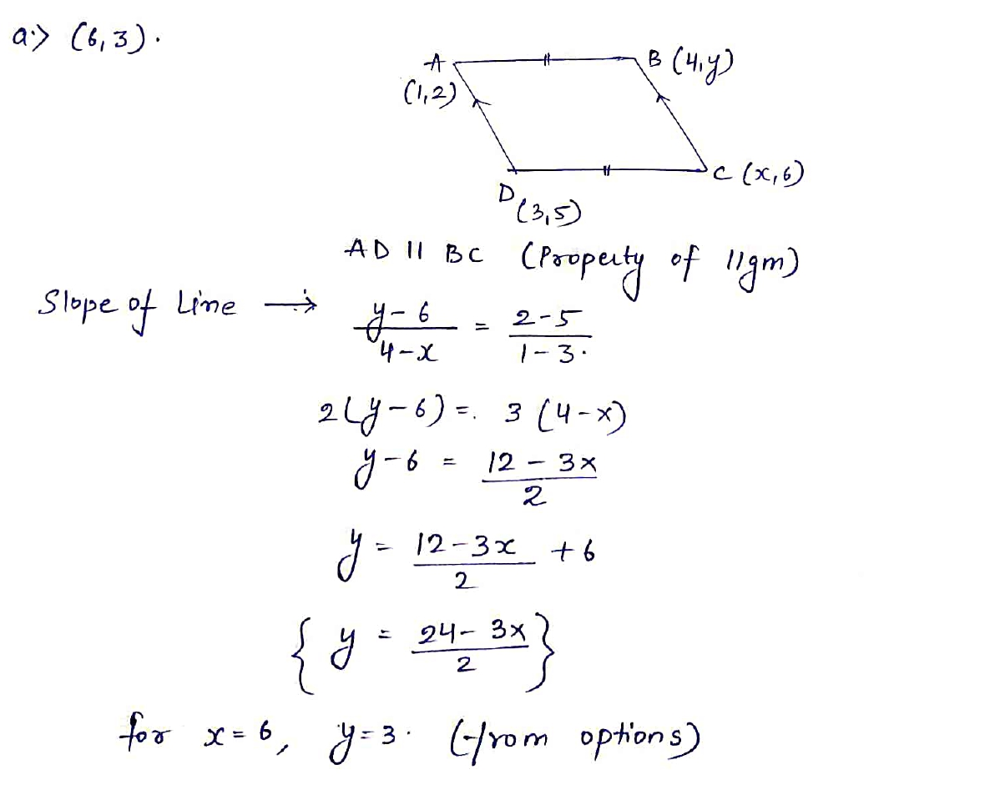Q30. In the given figure, angleACB = angleCDA, AC = 8cm, AD = 3cm, then BD is
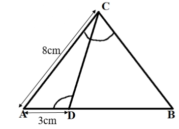- 22/3 cm
- 26/3 cm
- 55/3 cm
- 64/3 cm
Solution
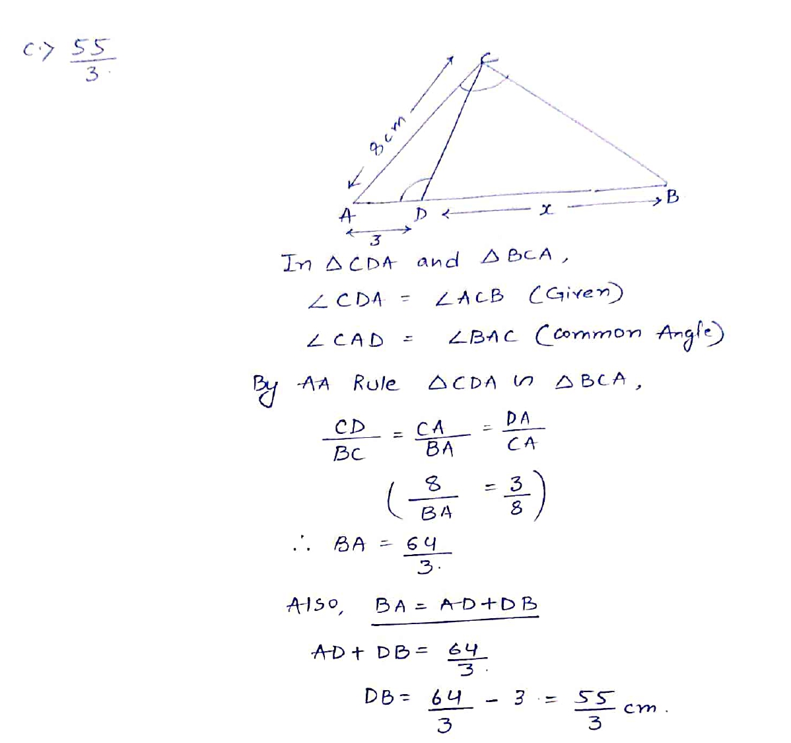Q.31 The equation of the perpendicular bisector of line segment joining points A(4,5) and B(-2,3) is
- 2x —y +7=0
- 3x +2 y — 7=0
- 3x —y — 7 =0
- 3x +y — 7=0
Solution
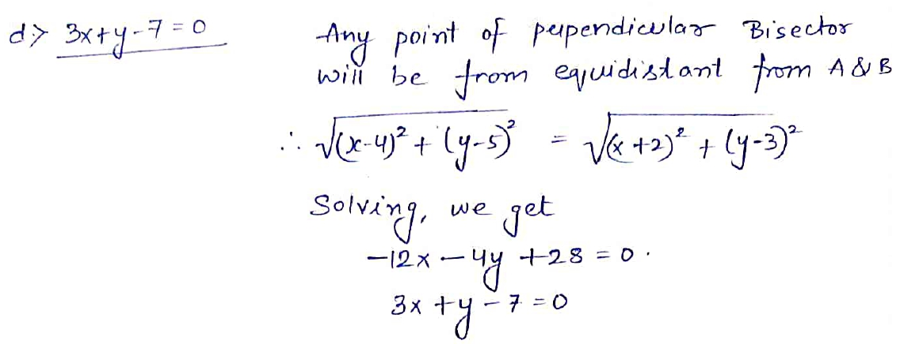Q.32 In the given figure, D is the mid-point of BC, then the value of coty / cotx
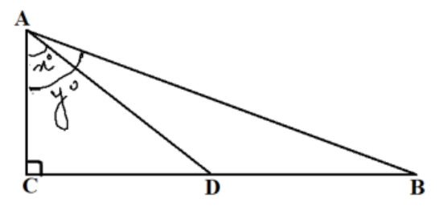- 2
- 1/2
- 1/3
- 1/4
Solution
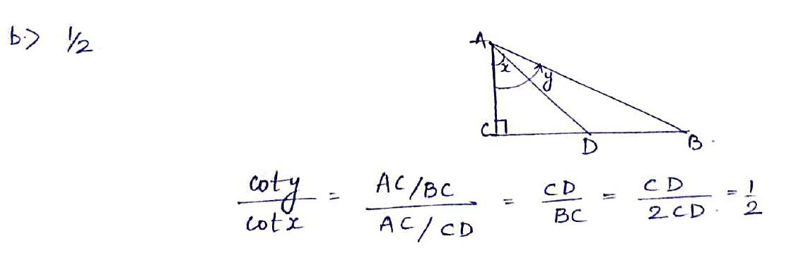Q.33 The smallest number by which 1/13 should be multiplied so that its decimal expansion terminates after two decimal places is
- 13/100
- 13/10
- 10/13
- 100/13
Solution
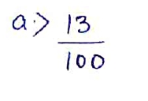Q.34 Sides AB and BE of a right triangle, right angled at B are of lengths 16 cm and 8 cm respectively. The length of the side of largest square FDGB that can be inscribed in the triangle ABE is
- 32/3cm
- 16/3cm
- 8/3cm
- 4/3cm
Solution

Q.35 Point P divides the line segment joining R(-1, 3) and S(9,8) in ratio k:l. If P lies on the line x — y +2=0, then value of k is
- 2/3
- 1/2
- 1/3
- 1/4
Solution
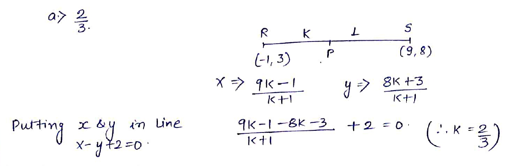Q.36 In the figure given below, ABCD is a square of side 14 cm with E, F, G and H as the mid points of sides AB, BC, CD and DA respectively. The area of the shaded portion is
- 44cm2
- 49 cm2
- 98 cm2
- 49 π/2 cm2
Solution
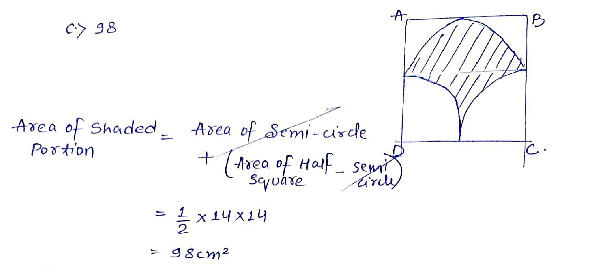Q.37 Given below is the picture of the Olympic rings made by taking five congruent circles of radius 1cm each, intersecting in such a way that the chord formed by joining the point of intersection of two circles is also of length lcm. Total area of all the dotted regions assuming the thickness of the rings to be negligible is
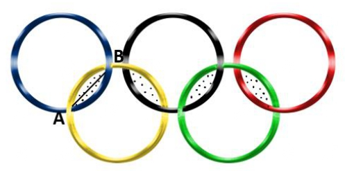- 4(π/12 - √3/4)cm2
- (π/6 - √3/4)cm2
- 4(π/6 - √3/4)cm2
- 8(π/6 - √3/4)cm2
Solution
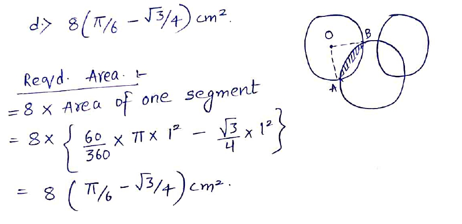Q.38 If 2 and 1/2 are the zeros of px2+5x+r, then
- p = r = 2
- p = r = - 2
- p = 2, r= -2
- p = -2, r= 2
Solution
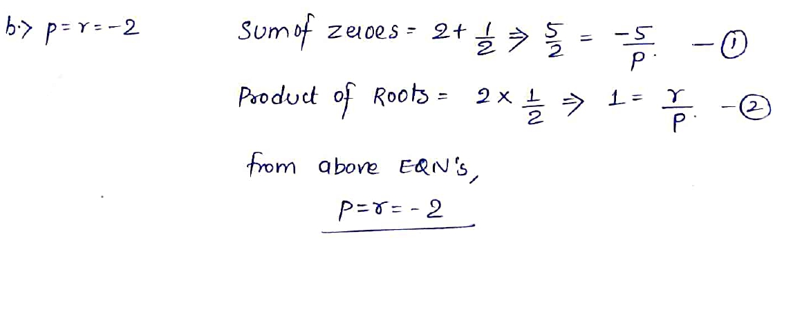Q.39 The circumference of a circle is 100 cm. The side of a square inscribed in the circle is
- 50√2 cm
- 100/π cm
- 50√2/π cm
- 100√2 / π cm
Solution
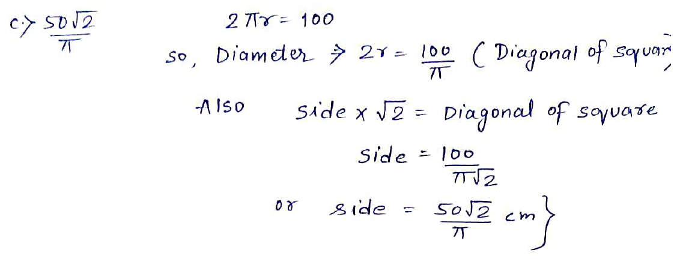Q.40 The number of solutions of 3x+y = 243 and 243x-y= 3 is
- 0
- 1
- 2
- infinite
Solution
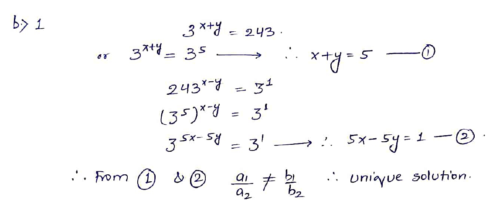SECTION- C
Q41-Q45 are based on Case study -1 The figure given alongside shows the path of a diver, when she takes a jump from the diving board. Clearly it is a parabola. Annie was standing on a diving board, 48 feet above the water level. She took a dive into the pool. Her height (in feet) above the water level at any timeT in seconds is given by the polynomial h(t) such that h(t) = -16t2+ 8t + k.
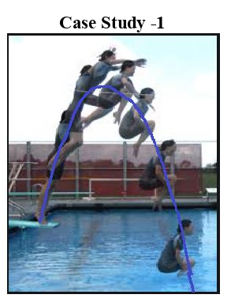Q.41 What is the value of k?
- 0
- -48
- 48
- 48/-16
Solution
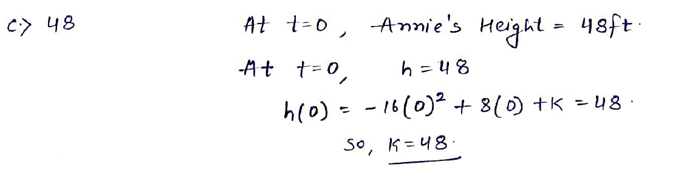Q.42 At what time will she touch the water in the pool?
- 30 seconds
- 2 seconds
- 1.5 seconds
- 0.5 seconds
Solution
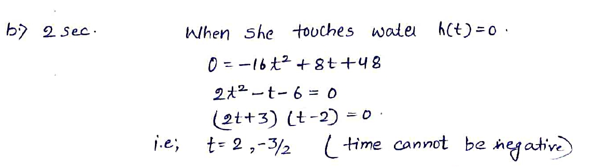Q.43 Rita's height (in feet) above the water level is given by another polynomial p(t) with zeroes -1 and 2. Then p(t) is given by
- t2 + t - 2
- t2 + 2t - 1
- 24t2 - 24t + 48
- -24t2 + 24t + 48
Solution
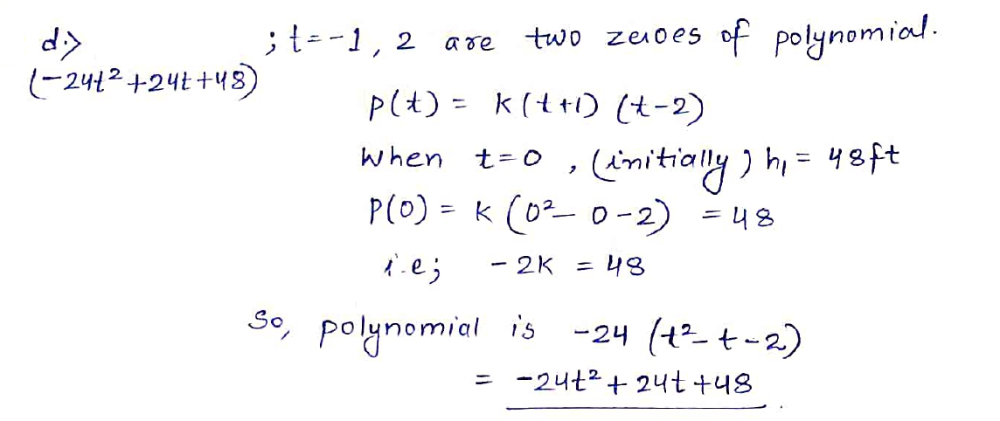Q.44 A polynomial q(t) with sum of zeroes as 1 and the product as -6 is modelling Anu's height in feet above the water at any time t( in seconds). Then q(t) is given by
- t2 + t + 6
- t2 + t -6
- -8t2 + 8t + 48
- 8t2 - 8t + 48
Solution
Q.45 The zeroes of the polynomial r(t) = -12t2 + (k-3)t +48 are negative of each other. Then k is
- 3
- 0
- -1.5
- -3
Solution
Q46-Q50 are based on Case study -2 A hockey field is the playing surface for the game of hockey. Historically, the game was played on natural turf (grass) but nowadays it is predominantly played on an artificial turf. It is rectangular in shape - 100 yards by 60 yards. Goals consist of two upright posts placed equidistant from the centre of the backline, joined at the top by a horizontal crossbar. The inner edges of the posts must be 3.66 metres (4 yards) apart, and the lower edge of the crossbar must be 2.14 metres (7 feet) above the ground. Each team plays with 11 players on the field during the game including the goalie. Positions you might play include- • Forward: As shown by players A, B, C and D. • Midfielders: As shown by players E, F and G. • Fullbacks: As shown by players H, I and J. • Goalie: As shown by player K Using the picture of a hockey field below, answer the questions that follow:
Q.46 The coordinates of the centroid of ∆EHJ are
- (-2/3, 1)
- (1,-2/3)
- (2/3,1)
- ( -2/3,- 1)
Solution
Q.47 If a player P needs to be at equal distances from A and G, such that A, P and G are in straight line, then position of P will be given by
- (-3/2, 2)
- (2,-3/2)
- (2, 3/2)
- ( -2,-3)
Solution
Q.48 The point on x axis equidistant from I and E is
- (1/2, 0)
- (0,-1/2)
- (-1/2,0)
- ( 0,1/2)
Solution
Q.49 What are the coordinates of the position of a player Q such that his distance from K is twice his distance from E and K, Q and E are collinear?
- (1, 0)
- (0,1)
- (-2,1)
- ( -1,0)
Solution
Q.50The point on y axis equidistant from B and C is
- (-1, 0)
- (0,-1)
- (1,0)
- ( 0,1)